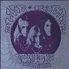
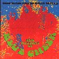
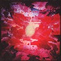
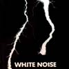
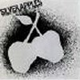

strange music page
overesas * * * experiment/psychedlic in 60'
|
#60年代の変なヤツ。サイケなヤツとか。
|
- Blue Cheer
- Vanilla Fudge
- Hapshash & The Coloured Coat
- Incredible String Band
- Silver Apple
- Whitenoise
|
#
ガ行でしか表現できないギターの音っす。ボクシングでグローブの中に砂詰まってるんじゃないか？みたいなパンチ力。
CD NOWでの試聴はここ。で、(2001.11.16)

- Summertime Blues
- Rock Me Baby
- Doctor Please
- Out Of Foucs
- Parechment Farm
- Second Time Around
- Leigh Stephens (guitars,vocals)
- Dickie Peterson (bass,vocals)
- Paul Whaley (drums,vocals)
REPETOIRE RECORDS: IMS-7023 (original release 1967)
#ブルーチアーのベスト。一枚目が一番かっちょいいです (ミッシェルガンエレファントがジャケットパクってたやつ)
サマータイムブルースのなんていうか気合漲るギターとか、スゴイっす
ギュイギュイっていってます。ゆらゆら帝国なんか好きな人とかいいかも、時代が違うからやっぱ。

- Sumertime Blues
- Out of Focus
- Parchment Farm
- Feathers From Your Tree
- The Hunter
- Babylon
- Peace of Mind
- Fruit And Icebergs
- Fool
- Hello L.A. Bye Bye Birmingham
- Saturday Freedom
- Good Times Are so Hard to Find
- Pilot
- Preacher
- Hiway Man
- I'm The Light
track 1-3. from "VINCEBUS ERUPTUM" (1968.1)
track 4-6. from "OUTSIDEINSIDE" (1968.8)
track 7.8. from "NEW! IMPROVED!" (1969.3)
track 9-11. from "BLUE CHEER" (1969.12)
track 12-14. from "THE ORIGINAL HUMAN BEING" (1970.9)
track 15.16. from "OH! PLEASANT HOPE" (1971.4)
- Dickie Peterson (bass,vocals)
- Leigh Stephens (guitars,vocals on 1-6.)
- Paul Whaley (drums,vocals on 1-8.)
- Ralph Kellongg (organ,reeds on 4-6.9-16.)
- Randy Holden (guitars,vocals on 7.8.)
- Bruce Stephens (guitars,vocals on 11.)
- Gary Yoder (guitars,vocals on 9.10.12-16.)
- Norman Mayell (drums,percussions on 9-16.)
POLYGRAM RECORDS: 834-030-2
- The Sky Cried - Whean I Was A Boy
- Thoughts
- Paradise
- That's What Makes A Man
- The Spell That Comes After
- Faceless People
- Season Of A Witch
- You Keep Me Hanging On (7" version)
- Come By Day Come By Night
- People
- Carmine Appice (drums)
- Tim Bogert (bass)
- Vincent Martell (guitars)
- Mark Stein (organ)
REPERTOIRE RECORDS: RR-4126-WZ (original release 1968 - Atlantic Records)
#完全にイッちゃってます。それでも
AMON DUULみたいなキチガイレコードにならないのは、イギリス人だからかな？
えーと60年代のサイケ/ヒッピー/ドラッグ文化のわかりやすい見本みたいなレコードですね、やたらと反復の多い曲とか、叫んでたり呟いてたりするボーカルとか、何だか訳わからないパーカッションとか.....結構好きです。ジャケットも結構キテます。

- H-O-O-P-Why?
- A Mind Blown Is A Mind Shown
- The New Messiah Coming 1985
- Aoum
- Empires Of The Sun
REPERTOIRE RECORDS: REP-4404-WY (original release 1967)
- Chinese White
- No Sleep Blues
- Painting Box
- The Mad Hatter's Song
- Little Cloud
- The Eyes of Fate
- Blues for the Muse
- The Hedgehog's Song
- Firs Girl I Loved
- You Know What You Could Be
- My Name Is Death
- Gently tender
- Way Back In The 1960's
- Mike Heron (vocals,guitars)
- Robin Williamson (vocals,guitars)
- Danny Thompson (bass)
- Licorice (vocals,percussions)
(original release 1967)
#サイケ....サイケか？ なんていうか実験サイケデリック電子音楽、なんだか「ガー」とか「ピー」とか変な電子音の後ろから女の人の喘ぎ声とか。そーいう代物。

- Love Without Sound
- My Game Of Loving
- Here Come Te Fleas
- Firebird
- Your Hidden Dreams
- The Visitations
- The Black Mass: An Electric Strom In Hell
produced by David Vorhaus
electric sound realisation - Delia Derbyshire, Brian Hodgson
- Paul Lytton (percussions)
- John Whiteman (vocals)
- Annie Bird (vocals)
- Van Shaw (vocals)
POLYGRAM: PHCR-4856 (original release 1969.12.1 - ISLAND RECORDS)
#ジャケも大好きです、シルバーアップルズの1枚目と2枚目のカップリングです。1968年くらいのアメリカのグループで、楽器編成はドラム+発信機。
で、どんな実験音楽かと言うとピヨ～ンというオシレータの伴奏にあわせてちょっとサイケ気味に歌ってます、いかれてます。CDの中に写真が有って、要塞みたいなドラムを叩く男と発信機とツマミに囲まれながら歌う男が映ってます。
その発振機群はTHE SIMEONって名前が付いてるみたいです、9個の発振機と86個のコントローラーだそうで....物凄い大仰あアナログシステム。何が面白いってこんな大仰なシステム使って
フツーに歌っちゃう辺り、アメリカ人らしさを感じます。バックは電子音がフヨフヨ/ガピガピ鳴ってる中で歌っちゃう違和感が面白いです。ほんとはもっとバリバリの電子音楽だと思ってましたよ。
ちなみに有るみたいですね、
オフィシャルページ、gooにも試聴ありました
こっち。 (2001.3.23)

SILVER APPLES
- Oscillations
- Seagreen Serenades
- Lovefingers
- Program
- Velvet Cave
- Whirty-Bird
- Dust
- Dancing Gods
- Misty Mountain
CONTACT:
- You And I
- Water
- Ruby
- Gypsy Love
- You're Not Foolin' Me
- I Have Known Love
- A Pox On You
- Confusion
- Fantasies
- Simeon (the simeon,vocals)
- Dan Taylor (drums,vocals)
MCA RECORDS: MCAD-11680 (original release 1968,1969)